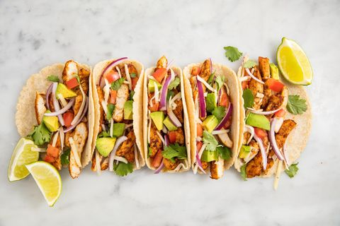

Easy Chicken Tacos
While tacos these days take many shapes and forms, we know that even these basic chicken tacos are not the most authentic. The taco history is long and rich and is originally a form of Mexican street food. These are a much more Americanized form of taco, meaning that it's a tortilla filled with spiced meats and yummy toppings. While the true definition and origin of a taco can be quite blurry, we know one thing for sure - tacos are our favorite food group. Try these quick and easy tacos for your next Taco Tuesday and don't forget the margarita!
Ingredients
FOR THE TACOS
- 3 tbsp. extra-virgin olive oil
- 4 boneless skinless chicken breasts, cut into 1" strips
- Kosher salt
- Freshly ground black pepper
- 2 tsp. chili powder
- 2 tsp. ground cumin
- 1/2 tsp. garlic powder
- 1/4 tsp. paprika
- 1/4 tsp. cayenne
- 8 corn tortillas, warmed
TOPPINGS
- Sour cream
- Thinly sliced red onion
- Diced tomatoes
- Shredded Monterey Jack
- Diced avocados
- Fresh cilantro
- Lime wedges
Steps
- Add sliced chicken to a large resealable bag and pour in olive oil, fresh lime juice, chili powder, cumin, garlic powder, paprika, cayenne, salt, and pepper. Refrigerate chicken for at least 30 minutes. When ready to cook, remove chicken from marinade and heat a little more oil in a skillet. Add the chicken and cook until cooked through!
- If you've got a gas burner, turn it to medium low and place your tortillas directly on the burner. Let toast a few seconds (you can always peek using some tongs) flip, and toast some more. Not only will this give your tortillas some nice smoky flavor, it'll also make them more pliable. Never walk away from the stove when you're toasting tortillas on an open flame, no one wants to deal with a flaming tortilla! If you have an electric burner, heat a cast iron skillet over high heat and add your tortillas in a single layer. Toast, flipping occasionally, until warm and pliable.
- In a large skillet over medium heat, heat oil. Season chicken with salt and pepper and add to skillet. Cook until golden, 6 minutes. Add spices and stir until coated, 1 minute more. If needed, add a little more oil or water to help spices coat chicken..
- Build tacos: In tortillas, layer chicken and desired toppings. Serve with lime wedges.